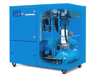

Модульная конструкция с просторным размещением стандартных узлов в трех отдельных секциях
|
Редуктор в системе привода двигателя компрессора
|
Горизонтальный резервуар обеспечивает предварительное отделение масла, хорошую деаэрацию масла и низкое пенообразование |
|---|
КОМПРЕССОРЫ BOGE: Винтовые компрессоры серии SG (привод компрессора через редуктор)
Производительность: 13,81-18,39 м3/мин
Давление: 7.5, 10, 13 атм
Мощность: 75-110 кВт
Масса: 2047-2132 кг
Компрессоры серии SG представляют собой высокоэффективные и надежные винтовые компрессоры средней производительности в модульном исполнении.
Компрессоры серии SG разработаны для экономичной и надежной работы на любом производстве. Эти компрессоры промышленного исполнения выпускаются в базовом исполнении с редуктором в системе привода. Выигрышное исполнение компрессоров серии S включает надежные качественные комплектующие и продуманную компоновку модуля, с учетом рационального использования законов физики, рассчитанную на максимальный КПД.
Высочайшее качество немецкой сборки и продуманная конструкция - основа надежной длительной работы и максимальной эффективности.

Винтовой компрессор серии SG (базовая модель) мощностью 75- 110 кВт
Иcполнение: компрессор с электронной системой управления BOGE Focus в модульном исполнении;
max.давление: 7.5, 10,13 атм
защита от замерзания от -10 оС
|
модель компрессора
|
max. давление
|
производит.
|
мощность
|
габариты
|
подсоед.
|
масса
|
серия SG |
атм
|
м 3/мин
|
кВт
|
мм |
кг |
|
SG 101-3
|
7.5
10 13 |
13,81
11,74 10,98 |
75,0
|
2365/ 1335/ 1750
|
G 2 1/2
|
2047
|
|---|---|---|---|---|---|---|
SG 125-3
|
7.5
10 13 |
15,59
14,07 11,51 |
90,0
|
2365/ 1335/ 1750
|
G 2 1/2
|
2067
|
SG 150-3
|
7.5
10 13 |
18,39
16,31 14,32 |
110,0
|
2365/ 1335/ 1750
|
G 2 1/2
|
2132
|
возможные опции:
 шланг высокого давления 500 мм;
шланг высокого давления 500 мм;
 циклонный сепаратор на выходе сжатого воздуха, в комплекте с устройством автоматического слива конденсата Bekomat (электронный конденсатоотводчик, управляемый по уровню);
циклонный сепаратор на выходе сжатого воздуха, в комплекте с устройством автоматического слива конденсата Bekomat (электронный конденсатоотводчик, управляемый по уровню);
 водяное охлаждение с теплообменником (градирней) замкнутого цикла;
водяное охлаждение с теплообменником (градирней) замкнутого цикла;
 усиленная звукоизоляция.
усиленная звукоизоляция.
см.также: Воздухосборники вертикальные 0,1-10,0 м3 (давление от 8 до 40 атм)